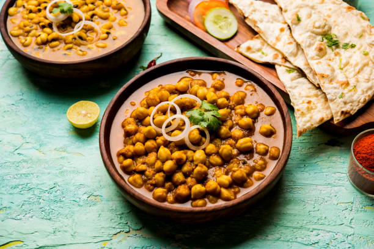

Chole Bhature Recipe
Ingredients
For Chole (Chickpea Curry):
- 1 cup Chickpeas (Chole), soaked overnight
- 1 large Onion, finely chopped
- 2 medium Tomatoes, pureed
- 1 tablespoon Ginger-Garlic Paste
- 2 Green Chilies, chopped
- 1 teaspoon Cumin Seeds
- 1 Bay Leaf
- 1 Black Cardamom
- 2-3 Cloves
- 1 inch Cinnamon Stick
- 2 tablespoons Chole Masala
- 1/2 teaspoon Turmeric Powder
- 1 teaspoon Red Chili Powder
- 1 teaspoon Coriander Powder
- 1 teaspoon Garam Masala
- Salt, to taste
- 2 tablespoons Oil
- Water, as needed
- Fresh Coriander Leaves, for garnish
For Bhature (Fried Bread):
- 2 cups All-purpose Flour (Maida)
- 2 tablespoons Semolina (Sooji/Rava)
- 1/2 cup Yogurt
- 1/2 teaspoon Baking Powder
- 1/4 teaspoon Baking Soda
- Salt, to taste
- 1 teaspoon Sugar
- 1 tablespoon Oil (for dough) + for frying
- Water, as needed
Preparation Process
Chole:
- Cook Chickpeas: Pressure cook the soaked chickpeas with water and a pinch of salt until soft (about 4-5 whistles).
- Prepare Masala: Heat oil in a pan. Add cumin seeds, bay leaf, black cardamom, cloves, and cinnamon stick. Sauté for a few seconds. Add finely chopped onions and sauté until golden brown. Add ginger-garlic paste and green chilies. Sauté for a minute. Add tomato puree and cook until the oil separates.
- Add Spices: Add turmeric powder, red chili powder, coriander powder, and chole masala. Mix well and cook for a few minutes.
- Combine Chickpeas and Masala: Add the cooked chickpeas to the masala. Mix well and add water as needed to achieve the desired consistency. Simmer for 10-15 minutes.
- Finish and Garnish: Add garam masala and adjust salt. Garnish with fresh coriander leaves.

Bhature:
- Prepare Dough: In a large bowl, mix all-purpose flour, semolina, baking powder, baking soda, salt, and sugar. Add yogurt and 1 tablespoon of oil. Mix well. Add water gradually and knead into a soft dough. Cover and let it rest for 1-2 hours.
- Roll and Fry: Divide the dough into equal portions and roll into balls. Roll out each ball into a flat, round shape. Heat oil in a deep frying pan. Fry each bhature until golden brown and puffed.
- Serve: Serve hot bhature with chole, along with sliced onions, lemon wedges, and pickle.